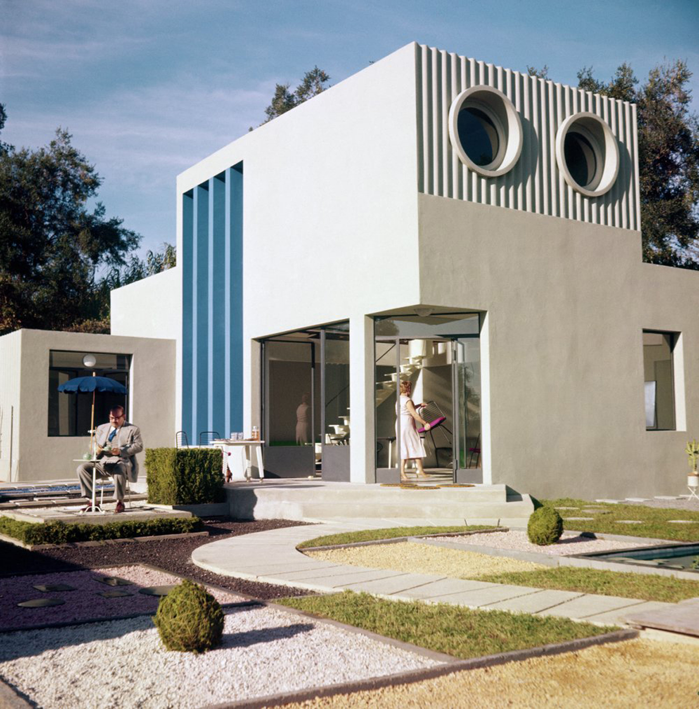

Mon oncle
Le petit Gérard aime passer du temps avec son oncle, M. Hulot, un personnage rêveur et bohème qui habite un quartier populaire et joyeux de la banlieue parisienne. Ses parents, M. et Mme Arpel, résident quant à eux dans une villa moderne et luxueuse, où ils mènent une existence monotone et aseptisée. Un jour que Gérard rentre d’une énième virée avec son oncle, M. Arpel prend la décision d’éloigner son fils de M. Hulot. Il tente alors de lui trouver un travail dans son usine de plastique, tandis que sa femme lui organise un rendez-vous galant avec l’une de leurs voisines…
Pourquoi un Mon oncle ?
Mon oncle est un film des années 1958 qui m'a beaucoup plus parce qu'avant de connaître la date de ce film, on ne pourrait jamais imaginer que ce film est aussi vieux. J'ai beaucoup aimé ce film pour les formes géométrique que l'on retrouve, le choix graphique, la manière de filmer ainsi que le script du film.
Qu'est ce que ça m'a apporté ?
Grâce à ce film, j'ai pu découvrir un nouveau milieu graphique très intéressant par le travail sur les couleurs, les formes géométriques ainsi que la recherche d'un monde futuriste, la nouveauté pour l'époque.
Ça m'a appris a toujours rester au goût du jour et ne jamais arrêter d'essayer d'imaginer l'avenir à travers les formes et les couleurs, ce que je mets en application dans mes designs web ainsi que dans mes illustrations. On pourrait également l'appliquer au développement web avec la recherche d'un nouveau frameworks, un nouveau langage web.